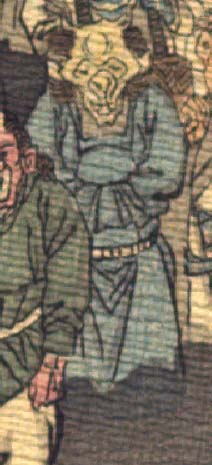

薄黄色い肌の鬼。頭頂は禿げ、角が2本生えている。額に皺が寄り、目は落ち窪んで小さく、鼻は豚のようである。耳は尖っている。頬はこけ、あごは尖っている。中国風の青い衣服を身に付け、両手を組んで袖の中に入れている。
著作者：J.Dautremer／出典：親書誌：U426_nichibunken_0123：Le vieillard et les démons／日付：2006／資源識別子：U426_nichibunken_0123_0002_0003
Copyright (c)2010- International Research Center for Japanese Studies, Kyoto, Japan. All rights reserved.